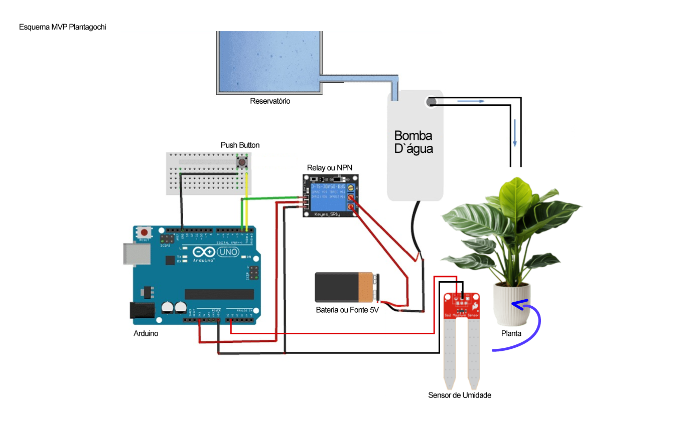

O Plantagochi visa auxiliar na rega adequada, transformando o cuidado com a planta em uma interação divertida. Ele monitora a umidade do solo e fornece feedback visual para garantir a saúde da planta. O projeto se insere na área de IoT básica e Automação Residencial.
Esquema Conceitual
O diagrama de blocos abaixo ilustra a interconexão dos principais elementos do sistema: Sensor de Umidade (Entrada), Arduino (Processamento) e Bomba (Saída).
Palavras-chave
Arduino, Jardinagem Inteligente, IoT, Monitoramento de Umidade, Sistemas Digitais.
Componentes e Suprimentos
Lista detalhada de todos os itens utilizados.
| Componente | Descrição | Referência |
|---|---|---|
| Placa Arduino | Microcontrolador principal. | Blackboard (...) |
| Sensor de Umidade do Solo | Mede a umidade do solo. | Sensor Capacitivo |
| LEDs | Amarelo, Verde e Vermelho | Kit Blackboard |
| Mini Bomba d'água | 5V | (...) |
| NPN ou Relay | Para acionar a bomba | (...) |
| Mangueira 4mm | 30cm | (...) |
| Reservatório | Pote de sorvete | Pavê |
Aplicativos e Plataformas
- Arduino IDE
- HTML5, CSS3, JavaScript
- GitHub (Controle de Versão)
Passo a Passo
Instruções para montagem do seu Plantagochi.
-
Preparo do Reservatório
Posicione a Mini Bomba d'água dentro do reservatório e fixe a mangueira na saída. Certifique-se de que a bomba esteja submersa quando o reservatório estiver com água.
-
Arduino na protoboard
Conecte o Arduino e a protoboard e crie as trilhas de alimentação (5V) e terra (GND) utilizando os jumpers. Isso facilitará as conexões dos demais componentes.
-
Conexão dos LEDs e Resitores
Ligue os LEDs (com resistores de 220Ω ou similar) aos pinos digitais do Arduino (Ex: D2, D3, D4). O cátodo (perna menor) de cada LED deve ir para o GND.
-
Conexão do Botão
Conecte um botão de pressão (para acionamento manual da bomba ou reset ) ao pino digital D7 do Arduino e à linha de GND, utilizando a configuração pull-up no código ou um resistor pull-down físico.
-
Conexão do Sensor de Umidade
Conecte o pino analógico do sensor de umidade capacitivo à porta A0 do Arduino. O VCC e GND do sensor devem ser conectados à alimentação do circuito (5V e GND).
-
Conexão da Bomba e Relay/NPN
Conecte o Módulo Relé (ou um NPN) a um pino digital do Arduino (Ex: D8). O relé deve ser ligado à bomba e à fonte de alimentação externa para isolar o Arduino da carga de alta corrente da bomba.
-
Conexão da Fonte Externa
Ligue a fonte de alimentação externa (geralmente 9V ou 12V) ao circuito de alta potência, que inclui o Módulo Relé e a Mini Bomba. O Arduino pode ser alimentado via USB ou pela própria fonte externa regulada.
-
Inserção do sensor de humidade
Insira o sensor de umidade na terra da planta.
Código do Projeto
Aqui está o código principal do projeto Plantagochi na sua versão MVP (Produto Mínimo Viável). Este código, desenvolvido para a plataforma Arduino, é o cérebro do nosso sistema de monitoramento da planta. Ele é responsável por ler a umidade do solo, determinar o estado de saúde da planta (Seco, Saudável ou Afogando) e controlar os atuadores (LEDs de status e a bomba d'água) com base nas leituras.
Configuração de Pinos
// PINS
int PINO_BOMBA = 9;
int PINO_SENSOR = A1;
int PINO_BOTAO_REGA = 13;
int PINO_LED_1 = 1; // LED SECO
int PINO_LED_2 = 2; // LED SAUDÁVEL
int PINO_LED_3 = 3; // LED AFOGANDO
Define as variáveis de pinos do Arduino, mapeando cada componente físico (Bomba, Sensor de Umidade, Botão de Rega e LEDs de Status) para seu respectivo pino digital ou analógico.
setup()
void setup() {
Serial.begin(9600);
// SETUP DOS PINS
pinMode(PINO_SENSOR, INPUT);
pinMode(PINO_BOMBA, OUTPUT);
pinMode(PINO_LED_1, OUTPUT);
pinMode(PINO_LED_2, OUTPUT);
pinMode(PINO_LED_3, OUTPUT);
pinMode(PINO_BOTAO_REGA, INPUT);
// GARANTIR QUE A BOMBA COMEÇA DESLIGADA
digitalWrite(PINO_BOMBA, LOW);
}
Inicializa a comunicação serial (Serial.begin(9600)) e configura o modo de operação de cada pino (INPUT para sensor/botão, OUTPUT para bomba/LEDs). Garante que a bomba comece desligada.
Leitura do Sensor
int lerUmidade() {
// ler o sensor e mapear a umidade para um valor utilizavel
int umidade_cru = analogRead(PINO_SENSOR);
// Mapeia de 0-1023 (bruto) para 0-100 (utilizável)
int umidade = map(umidade_cru, 0, 1023, 255, 0);
return umidade;
}
Realiza a leitura da porta analógica (analogRead()) do sensor de umidade. Em seguida, usa a função map() para converter o valor bruto (0-1023) em uma escala mais utilizável e intuitiva (por exemplo, 0-100), facilitando a definição dos limiares de estado.
Estados
int atualizarEstado() {
int estado;
if (umidade_atual < 20) {
estado = 1; // SECO
} else if (umidade_atual < 60) {
estado = 2; // SAUDAVEL
} else {
estado = 3; // AFOGANDO
}
return estado;
}
Define o estado de saúde da planta (1: Seco, 2: Saudável, 3: Afogando) comparando a umidade_atual com limiares fixos (20 e 60). Este valor é usado para controlar qual LED será aceso.
Rega
void iniciarRega() {
// inicia o ciclo de rega
if (umidade_atual < 50 && millis() - ultima_rega > intervalo) {
ligarBomba();
delay(tempo_rega);
desligarBomba();
ultima_rega = millis();
}
}
void ligarBomba() {
digitalWrite(PINO_BOMBA, HIGH);
}
void desligarBomba() {
digitalWrite(PINO_BOMBA, LOW);
}
Contém a lógica para acionamento da bomba. Verifica duas condições para rega automática: 1) se a umidade está abaixo do limite (50) e 2) se o intervalo de tempo mínimo (intervalo) entre as regas já passou, prevenindo que a planta seja encharcada.
loop()
void loop() {
umidade_atual = lerUmidade();
estado_atual = atualizarEstado();
enviarEstadoParaApp(); // No MVP, usa Leds
verificarComandos(); // checa se o user apertou o BOTAO_REGA
delay(500);
}
É a função principal que executa repetidamente. Chama as funções de leitura, atualização de estado e verificação de comandos em um ciclo contínuo, com um pequeno atraso (delay(500)) entre as iterações para estabilidade do sistema.
Link para o repositório completo do código no GitHub:
Acessar Código Completo no GitHubProblemas e Lições Aprendidas
Desafios Enfrentados
- Problema: A bomba não acionava corretamente na saída digital do Arduino.
- Resolução: Foi necessário incorporar um NPN (ou um módulo relé) e uma fonte de alimentação externa para a bomba.
Principais Lições
Aprendeu-se a importância da correta calibração de sensores e o uso estratégico de componentes de acionamento (relays) para lidar com atuadores de maior potência. Administração de tempo e trabalho em equipe!
Download
Baixe o arquivo .zip contendo todos os códigos, esquemas e instruções necessárias para replicar o Plantagochi.
Baixar Projeto Completo (.zip)